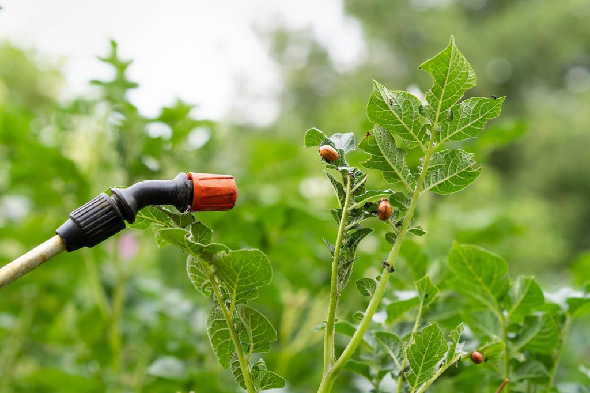
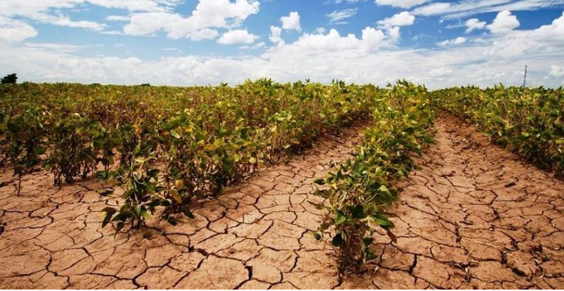
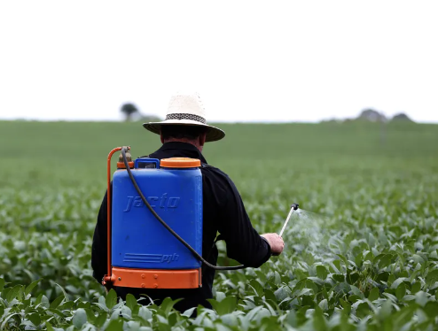

Dificuldades do campo
A vida no campo,embora bela,está repleta de desafios. Agricultores enfrentam condiçoes climáticas imprevisiveis,acesso Limitado a recursos entre outros problemas .
Apesar disso ,continuam a trabalhar com determinação e esperança sustentando a alimentação de todos


´pragas:As pragas na agricultura são organismos que prejudicam as culturas e podem causar danos significativos à produção.
Elas incluem insetos, ácaros, fungos, bactérias e plantas daninhas, e seu impacto varia desde a diminuição da qualidade e quantidade das
colheitas até a transmissão de doenças às plantas.

seca:A seca é um fenômeno climático caracterizado pela falta prolongada de precipitação, que pode ter um impacto devastador na agricultura
e na vida dos agricultores. Durante períodos de seca, as chuvas insuficientes resultam na diminuição da disponibilidade de água para as plantações
, afetando a produção agrícola e, consequentemente, a subsistência dos agricultores.
mosca de chifre:As moscas de chifre, também conhecidas como Haematobia irritans, são parasitas que afetam principalmente o gado
, mas seu impacto vai além dos animais afetados, estendendo-se significativamente aos agricultores e à produção agrícola
. Essas moscas são pequenas, mas têm um efeito desproporcionalmente grande devido à sua capacidade de causar desconforto e doenças nos bovinos.

dificuldades financeiras enfrentadas pelos agricultores são multifacetadas e podem resultar de uma combinação de custos elevados
, variações de mercado, condições climáticas adversas e acesso limitado a recursos financeiros. Essas dificuldades exigem uma abordagem integrada
e um suporte robusto para garantir a sustentabilidade e a resiliência do setor agrícola

mao de obra:A mão de obra na agricultura é uma área fundamental para a produção de alimentos e desempenha um papel crucial na cadeia
de suprimento global. Hoje em dia, essa força de trabalho
enfrenta uma série de desafios e transformações. Com o crescimento da população mundial e a necessidade crescente de produção eficiente,
a demanda por trabalhadores agrícolas continua a ser alta, mas o perfil e as condições desse trabalho estão mudando
.A automação e a digitalização estão redefinindo o setor,
introduzindo tecnologias como drones, sensores e sistemas de gerenciamento de dados que visam aumentar a eficiência e a precisão
das práticas agrícolas

agrotoxicos:Fazendeiros e trabalhadores rurais que lidam frequentemente com agrotóxicos enfrentam riscos significativos para a saúde
devido à exposição contínua a essas substâncias. Muitas vezes, eles estão em contato direto com os produtos durante a aplicação, o que pode
ocorrer manualmente ou por meio de equipamentos como pulverizadores. Esse contato direto pode ocorrer tanto na preparação quanto na aplicação
dos produtos, e a exposição não se limita apenas ao momento da aplicação, mas também à manipulação de resíduos e ao trabalho em áreas tratadas.